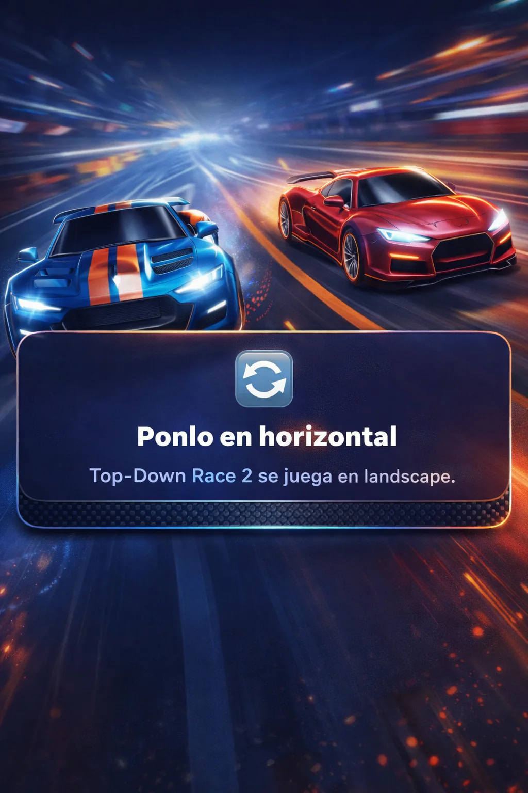

TOP DOWN RACE
CARGANDO MOTOR
0.0 s

GIRA TU DISPOSITIVO
Top Down RACE se juega en horizontal.
⚠ VERSIÓN BETA
TODO EL PROGRESO DE LA BETA SE REINICIARÁ CON EL LANZAMIENTO DEL JUEGO.
ROTATE YOUR DEVICE
Top Down RACE is played in landscape.
⚠ BETA VERSION
ALL BETA PROGRESS WILL BE RESET WHEN THE GAME LAUNCHES.